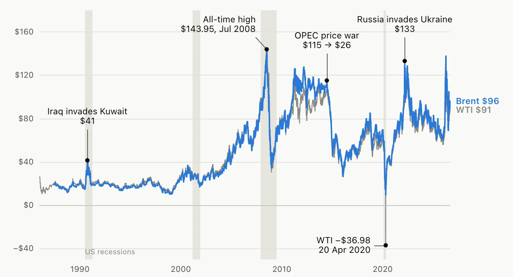

Which JavaScript line‑charts library?
We built the same three line charts in seven libraries, from real data: forty years of oil prices, Britain's electricity grid every half hour since 2009, and weekly npm downloads for 22 charting libraries. We timed them, measured their size and picked one for each job.
7 libraries 3 charts on real data up to 1.25 million points Nov 2026


What to use
It depends what the chart is for. A pick and a runner-up for each job.
| The job | Use | Runner-up | Why |
|---|---|---|---|
| An interactive chartA dashboard or an app. Zoom, tooltips, a million points, many series. | Apache EChartsApache-2.0, canvas or SVG | Plotly.js: zoom and callouts in config, but 1.5 MB, and slow hover on big data until tuned. | Met all three tests, mostly with options. 1.25 million points in about 100 ms, with zoom and a slider built in. 368 KB. |
| A chart in an articleA report, a blog post, a data story. Static and annotated. | Observable PlotISC, SVG | D3, when you need what Plot can't do. | 44 lines for the oil chart, the fewest. Renders to static SVG in Node, which is how DataHub uses it. No zoom or pan. |
| Huge data, small pageSpeed and size are all that matter. | µPlotMIT, canvas | D3 drawing to canvas. | 1.25 million points in about 25 ms, 23 KB. No callouts, and you write wheel zoom and pan yourself. |
| A one-off chartThe chart is the product. | D3 | Did everything, all by hand: 1.3 to 2.6 times Plot's code. |
DataHub uses Plot for its data stories and ECharts for interactive charts. Why we did this · The full verdict
All seven, ranked
For someone choosing one library in 2026 for a website or an app, with no framework constraint. Weighed in this order: what the library does natively rather than by hand, interaction on the dense chart, keeping the true extremes in dense data, the finished appearance, then bundle size. Line counts are context, not a criterion.
Try it · Apache ECharts
Britain's grid, every half hour since 2009: coal went from 42% to zero
Coal was 42% of generation in 2012, its highest year here; Ratcliffe, Britain's last coal plant, closed on 30 September 2024.
The evidence
Three tests, each a different kind of line chart, each built to one shared brief in all seven libraries. Every cell below is live; the source and the measured line count are under each one.
- Oil, 1986–2026 (EIA, 20k points): the annotated editorial chart. End labels, callouts with leaders, recession bands, an axis that crosses zero for WTI at −$36.98 on 20 April 2020.
- Grid, half-hourly (NESO, 1.25M points): the dense interactive chart. Zoom and pan to one week, a crosshair tooltip, and a straight answer to “did you draw the solar peak?”
- npm downloads (22 libraries, 2015–2026): the many-series chart. Log scale, highlight one of 22, an indexed view and small multiples.
A missing-data side test (World Bank life expectancy, years removed on purpose) gives all seven the same explicit nulls. All seven implementations break the line at a null: six by default, D3 with .defined().
How we judged
- What the library did itself. Each requirement is marked native, by hand or not met, with the source on the page as proof. A chart that needs forty lines of canvas is a different answer from one that needs an option.
- How it fought back. Silent failures, defaults that mislead, plugins and hooks needed to get there. Build notes record every one.
- What it costs and how it looks. Lines of code as displayed (a rough guide, not a score), gzipped bundle as loaded from the CDN, render times (medians of six warm runs on one machine, method), and whether the result is a chart you would publish.
Versions and date
Measured 20–21 November 2026 on D3 7.9.2, Observable Plot 0.6.19, Vega-Lite 6.5.0 (Vega 6.4.0, vega-embed 7.4.0), Plotly.js 4.3.0, Chart.js 4.6.1 (annotation 3.1.0, zoom 2.2.0), Apache ECharts 6.1.0 and µPlot 1.6.32, all loaded from jsDelivr at those pins.
FAQ
Is the data real?
Yes. Oil prices are EIA daily spot prices, the grid is NESO's half-hourly GB generation mix, the npm numbers are the registry's download API, and the missing-data side test is World Bank life expectancy with some years removed on purpose to make gaps. Provenance and the exact files are in the repo.
Why not Highcharts, Recharts, ApexCharts or Nivo?
Highcharts is not free for commercial use and everything here is permissive open source. Recharts, Nivo and visx are React wrappers; this site is framework-free and a React page is a separate job. ApexCharts, Chartist, Frappe and billboard.js were not tested, so we make no claim about them.
Aren't line counts meaningless?
Nearly. They count the render function as it ran, comments included, and exclude shared helpers for everyone and each library's theme helper (which ranges from none to 24 lines). Formatting moves them by five or ten lines. We use them to say “about half”, never to rank. The finding is what is native and what is not, and that is on each page.
Was this built by AI?
Yes, by AI coding agents under our direction, each library by a separate agent working from one shared brief and a Plot reference. We reviewed every chart against the requirements, re-measured the numbers, and the source is under every chart so you can check our work. The verdict page says exactly how.
Why quote full bundles?
Because that is what a CDN tag loads, and it is how these pages use them. Sizes are gzip -9 of every file each page fetches from the CDN (per-file record), CSS and imported modules included: µPlot 23 KB, D3 118 KB, Chart.js 122 KB with its plugins, Plot 190 KB with the D3 it imports, Vega-Lite 283 KB with Vega, ECharts 368 KB, Plotly 1.48 MB. ECharts custom builds, Plotly partial bundles and D3 submodules are all smaller; we did not test them.
SVG or canvas, and what about accessibility?
Plot and D3 draw SVG here (D3 can draw canvas too, and does for the grid). Vega-Lite via vega-embed defaults to canvas; we used SVG except on the grid. Plotly draws SVG, and WebGL for scattergl. Chart.js and µPlot are canvas only. ECharts defaults to canvas, with an SVG renderer and server-side SVG rendering available. SVG text is selectable and inspectable, and Plot, D3 and Vega render it in Node at build time; canvas gives a screen reader nothing without extra work. Plot draws the grid at a daily step because SVG is too slow for 1.25M points; Vega-Lite does because its dataflow is, even on canvas.
I use React. Does this apply?
The ranking does: ECharts, Plot and the rest all mount in a React component as they do here. Recharts, Nivo and visx are not tested, and a React page is the obvious next bake-off.
Why does the Plot grid chart look different from the others?
It draws one value per day instead of every half-hour, because full resolution took 9 to 13 s in SVG: each day's mean as a line, over a band from that day's lowest to highest half-hour. The band keeps the true solar peak (16,289 MW); a mean line alone would show 5,444. Vega-Lite does the same, because its dataflow re-runs on every zoom frame: even hourly data took 0.9 s per wheel step. Zoomed in, a daily step shows days, not half-hours. The footer under each chart says what was drawn.